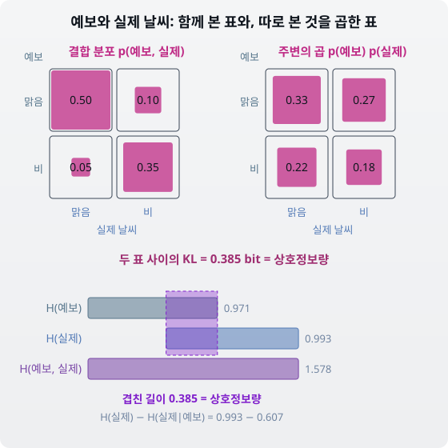
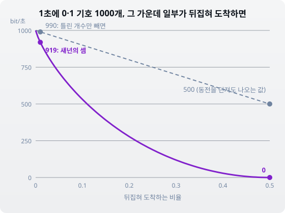

조건부 엔트로피 절에서 본 검사들은, 결과를 보기 전에 평균을 내면 불확실성을 줄였다. 거의 확신하던 믿음 (0.9, 0.05, 0.05)의 엔트로피 0.394가 검사 뒤 평균 0.100으로 내려갔고, 결정 트리는 이렇게 줄어든 양을 「정보 이득」이라 부르며 질문을 골랐다. 이런 비교를 아침마다 하는 사람이 있다. 날씨 앱을 열어 우산을 챙길지 정하는 사람이다. 휴대폰에 날씨 앱이 둘 있는데 하나만 남기려 한다면, 어느 앱이 비에 대해 더 많이 알려 주는지 숫자 하나로 견줄 수 있을까? 그리고 그 숫자는 「예보를 보고 날씨를 짐작하는」 쪽에서 재는 것과 「날씨를 알고 예보를 짐작하는」 쪽에서 재는 것이 같을까?
예보 앱과 실제 날씨
결과가 둘(맑음, 비)인 변수 두 개로 시작한다. 표가 네 칸으로 끝나서 모든 칸을 손으로 셀 수 있는 가장 작은 경우다. 앱 하나의 100일 기록이 이렇다고 하자.
실제 맑음
실제 비
합
「맑음」 예보
50일
10일
60일
「비」 예보
5일
35일
40일
합
55일
45일
100일
이 절에서는 엔트로피를 bit(밑이 2인 로그로 잰 단위, 예/아니오 질문 몇 번어치인지)로 잰다. 예보를 보기 전, 비가 올 확률은 0.45이고 날씨의 엔트로피는 0.9928 bit다. 예보를 보면 갈래가 둘로 나뉜다. 「맑음」이라고 한 60일 가운데 비 온 날은 10일이라 비 올 확률이 1/6, 그날의 엔트로피는 0.650이다. 「비」라고 한 40일 가운데 35일에 비가 왔으니 확률 0.875, 엔트로피는 0.544다. 두 갈래를 나올 확률(0.6, 0.4)로 평균하면 0.6074이다. 예보를 본 덕에 평균 0.9928 − 0.6074 = 0.3853 bit만큼 덜 헷갈리게 되었다.
이번에는 방향을 바꾼다. 날씨를 먼저 알고 그날 앱이 무엇이라 했을지 짐작한다. 앱의 예보는 60일 「맑음」, 40일 「비」라 엔트로피가 0.9710이다. 맑은 55일 가운데 50일은 「맑음」이라 했으니 그날 예보의 엔트로피는 0.439, 비 온 45일 가운데 35일은 「비」라 했으니 0.764다. 날씨 비율(0.55, 0.45)로 평균하면 0.5856이고, 줄어든 양은 0.9710 − 0.5856 = 0.3853이다. 출발점(0.9928과 0.9710)도 도착점(0.6074와 0.5856)도 다른데, 줄어든 양은 같다.
우연이 아니다. 같은 수를 세 번째 길로도 얻을 수 있다. 예보와 날씨가 서로 아무 상관이 없다면 표의 칸은 두 비율을 곱한 값이어야 한다. 「맑음」 예보와 맑은 날이 함께 올 확률은 0.6 × 0.55 = 0.33이 된다. 이렇게 한 변수씩 따로 본 분포를 주변분포(다른 변수의 조건을 모두 합쳐 버린 분포)라 부르고, 두 주변분포를 곱한 표는 「두 변수가 서로 모르는 세계」의 표다. 실제 표와 이 곱한 표 사이의 KL 발산을 재면 다시 0.3853이 나온다.

예보 앱 100일 기록의 결합 분포(50, 10, 5, 35일을 확률로)와 두 주변분포를 곱한 표(0.33, 0.27, 0.22, 0.18). 두 표 사이의 KL이 0.385 bit. 아래 막대는 H(예보) 0.971, H(실제) 0.993, H(예보, 실제) 1.578이고, 두 막대가 겹친 길이 0.385가 상호정보량이다
세 길이 모두 같은 양을 잰다. 이 양을 상호정보량이라 부른다. 한 변수를 알 때 다른 변수의 불확실성이 평균으로 얼마나 줄어드는지 재는 양이고, 어느 쪽에서 재도 같다.
KL 꼴로 쓰면 이 책이 다뤄 온 그림이 보인다. 결과가 넷인 분포는 심플렉스 위의 점 하나이고, 「두 변수가 서로 모르는」 분포들, 곧 주변분포 두 개의 곱으로 쓰이는 분포들은 그 안에 모여 하나의 모임을 이룬다. 상호정보량은 실제 결합 분포라는 점에서 그 독립 분포 모임까지 잰 KL이다. 독립 분포는 많다. 반반 × 반반인 독립 분포까지 KL을 재면 0.422로 더 멀다. 아래 파이썬은 모든 독립 분포를 격자로 훑어 가장 가까운 것을 찾는다. 찾아낸 것은 주변분포 두 개(0.60, 0.55)를 곱한 분포이고, 그 거리가 0.3853이다.
위젯의 조절 막대 셋(비 오는 날의 비율, 비 오는 날 「비」라고 예보할 확률, 맑은 날 「맑음」이라고 예보할 확률)으로 동네 날씨와 앱의 예보 방식을 바꿔 보라. 두 표가 서로 닮아 갈수록 상호정보량 막대가 0으로 내려간다.
직접 움직여 보기
불러오는 중…
파이썬
import numpy as np
def H(p): # 엔트로피(bit)
p = np.asarray(p, float).ravel(); p = p[p > 0]
return -(p * np.log2(p)).sum()
def KL(p, q): # KL(p‖q) (bit)
p, q = np.ravel(p), np.ravel(q); m = p > 0
return (p[m] * np.log2(p[m] / q[m])).sum()
# J[예보, 실제], 0 = 맑음, 1 = 비. 100일 가운데 50, 10, 5, 35일
J = np.array([[0.50, 0.10],
[0.05, 0.35]])
px, py = J.sum(1), J.sum(0) # 예보의 주변분포, 실제 날씨의 주변분포
H_y_x = sum(px[i] * H(J[i] / px[i]) for i in range(2)) # 예보를 본 뒤 날씨의 평균 엔트로피
H_x_y = sum(py[j] * H(J[:, j] / py[j]) for j in range(2)) # 날씨를 안 뒤 예보의 평균 엔트로피
print(f"H(실제) − H(실제|예보) = {H(py):.4f} − {H_y_x:.4f} = {H(py) - H_y_x:.4f}")
print(f"H(예보) − H(예보|실제) = {H(px):.4f} − {H_x_y:.4f} = {H(px) - H_x_y:.4f}")
print(f"KL(결합 ‖ 주변의 곱) = {KL(J, np.outer(px, py)):.4f}")
# 독립인 분포 (a, 1−a) × (b, 1−b) 가운데 결합 분포에 가장 가까운 것
g = np.linspace(0.01, 0.99, 99)
d, a, b = min((KL(J, np.outer([a, 1 - a], [b, 1 - b])), a, b) for a in g for b in g)
print(f"가장 가까운 독립 분포: 예보 맑음 {a:.2f}, 실제 맑음 {b:.2f}, KL {d:.4f}")
# H(실제) − H(실제|예보) = 0.9928 − 0.6074 = 0.3853
# H(예보) − H(예보|실제) = 0.9710 − 0.5856 = 0.3853
# KL(결합 ‖ 주변의 곱) = 0.3853
# 가장 가까운 독립 분포: 예보 맑음 0.60, 실제 맑음 0.55, KL 0.3853
ML에서: 정보 이득과 대조 학습
결정 트리가 질문을 고를 때 쓰는 정보 이득은, 마디의 사진 한 장이 어느 가지로 가는지(질문의 답)와 그 사진의 라벨 사이의 상호정보량이다. 가르기 전 라벨 엔트로피에서 가지들의 평균 엔트로피를 빼는 셈이 상호정보량 식의 첫째 꼴 H(Y) − H(Y∣X) 그대로다.
표현 학습에서는 셋째 꼴, 결합 분포와 주변분포의 곱을 견주는 꼴이 쓰인다. 그림과 그 설명글처럼 짝이 맞는 쌍은 결합 분포에서 나온 표본이고, 그림과 아무 설명글이나 짝지으면 주변분포의 곱에서 나온 표본이다. CLIP 같은 대조 학습 모델은 이 두 종류의 쌍을 가려내도록 학습하고, 그 손실이 상호정보량의 하한과 이어진다. 밀도를 모르고 표본만 가진 채 상호정보량을 재는 일이 여기서 생긴다. 하한이 배치 크기에 묶이는 까닭은 아래 문제 12에서 직접 계산한다.
수확
「상호정보량은 한 변수를 알 때 다른 변수의 불확실성이 평균으로 줄어드는 양이고, 어느 쪽에서 재도 같다. 결합 분포에서 「서로 모르는」 독립 분포들의 모임까지 잰 KL이며, 가장 가까운 독립 분포는 두 주변분포의 곱이다.」
인물 이야기 — 섀넌과 「990이 아니라 919」
클로드 섀넌(Claude Shannon)의 1948년 논문 「통신의 수학적 이론」에는 「모호함과 채널 용량(Equivocation and Channel Capacity)」이라는 절이 있다. 섀넌은 거기서 숫자 하나를 놓고 스스로 틀린 답을 먼저 써 보인다.
0과 1을 반반의 확률로 1초에 1000개씩 보낸다. 보내는 쪽은 1초에 1000 bit의 정보를 만든다. 그런데 전선의 잡음 때문에 평균 100개 가운데 1개가 뒤집혀 도착한다. 이 통신은 1초에 정보를 얼마나 실어 나르는가? 섀넌은 "처음 떠오르는 답"이 990 bit라고 적었다. 틀린 기호 10개만 빼면 된다는 계산이다. 그리고 곧바로 이 셈이 만족스럽지 않다고 했다. 받는 쪽은 어느 기호가 틀렸는지 모른다는 점을 셈에 넣지 않았기 때문이다.
그는 극단으로 가서 이 셈을 무너뜨렸다. 잡음이 너무 커서 받은 기호가 보낸 기호와 아무 상관이 없다고 하자. 그래도 받은 기호의 절반쯤은 우연히 맞는다. 틀린 개수만 빼는 셈은 이 통신에 1초에 500 bit를 실어 날랐다는 점수를 준다. 하지만 실제로는 아무것도 전해지지 않았다. 전선을 아예 끊고 받는 쪽에서 동전을 던져도 똑같이 「잘」 받을 것이다.
섀넌이 내놓은 고침은, 받은 신호를 본 뒤에도 남는 「무엇을 보냈는지에 대한 불확실성」을 빼는 것이었다. 그는 이 조건부 엔트로피를 모호함(equivocation)이라 불렀다. 0을 받았을 때 실제로 0을 보냈을 확률은 0.99, 1을 보냈을 확률은 0.01이니 기호 하나의 모호함은 0.081 bit, 1초에 81 bit다. 전송률은 1000 − 81 = 919 bit다. 받은 기호가 보낸 기호와 무관한 극단에서는 모호함이 기호마다 1 bit라 전송률이 0이 되고, 동전 던지기와 같다는 앞의 판단과 맞는다.

오류율에 따른 전송률. 점선은 틀린 개수만 뺀 셈(오류율 0.01에서 990, 0.5에서 500), 실선은 섀넌의 셈 1000 × (1 − 모호함)(0.01에서 919, 0.5에서 0). 섀넌 1948의 예를 이 책에서 다시 계산해 그렸다
섀넌은 같은 전송률을 세 가지 꼴로 적었다. 보낸 쪽의 엔트로피에서 모호함을 뺀 꼴, 받은 쪽의 엔트로피에서 잡음 때문에 생긴 엔트로피를 뺀 꼴, 두 엔트로피의 합에서 함께 본 엔트로피를 뺀 꼴이다. 셋째 꼴을 두고 그는 "두 쪽에 공통인 bit 수"라고 풀었다. 위에서 본 세 길과 같은 셋이다. 이 논문에 「상호정보량(mutual information)」이라는 이름은 없다. 그 이름은 1950년대 초 MIT의 로버트 파노(Robert Fano)가 세미나에서 쓰면서 자리 잡았다고 알려져 있다.
문제 10. 적중률이 같은 두 앱
비가 다섯 날에 한 번(확률 0.2) 오는 동네가 있다. 앱 B는 날마다 「맑음」이라고만 한다. 앱 C는 100일 가운데 30일 「비」라고 했고, 그 30일 중 15일에 실제로 비가 왔다. 「맑음」이라고 한 70일 가운데 비가 온 날은 5일이다. (가) 두 앱의 적중률(예보가 맞은 날의 비율)을 구하라. (나) 두 앱의 상호정보량 I(예보; 실제)를 bit로 구하라. (다) 우산을 챙길지 정하는 데 어느 앱을 남기겠는가? (위 위젯의 「문제 10: 앱 B」「문제 10: 앱 C」로 두 앱을 불러올 수 있다.)
함께 풀기
김민준
적중률은 둘 다 0.8이에요. B는 맑은 날 80일을 다 맞히고, C는 65일 + 15일 = 80일이요. 같으니까 아무거나 남겨도 돼요.
선생님
앱 B를 지우고 그 자리에 「내일 맑음」이라고 적은 쪽지를 붙여 두면 뭐가 달라져요?
김민준
아무것도요… B는 그 쪽지랑 같네요. 날씨를 하나도 안 보고도 80%가 나와요. 이 동네가 원래 다섯 날 중 네 날은 맑으니까요.
이서연
그러면 (나)에서 B는 0이어야 해. 예보가 늘 같으니까 예보를 본 뒤에도 비의 엔트로피가 처음 그대로 0.722야. C는 「맑음」이라고 한 날 비 올 확률이 5/70 = 0.071이고, 「비」라고 한 날은 15/30 = 0.5.
이서연
그런데 「비」라고 한 날은 반반이라 엔트로피가 1 bit야. 처음 0.722보다 커. C가 오히려 더 헷갈리게 하는 거 아니에요?
선생님
그날 하루만 보면 그래요. 예보를 보기 전에, 두 예보가 나올 확률로 평균을 내면요?
이서연
0.7 × 0.371 + 0.3 × 1 = 0.560이요. 처음 0.722에서 0.162 bit 줄었어요. 「비」라고 한 날은 더 헷갈리지만, 「맑음」이라고 한 70일 동안 엔트로피가 0.371로 크게 내려가는 쪽이 평균에 더 크게 들어가요.
이서연
문제 7(가방 속 열쇠)에서 못 찾은 날 아침만 더 헷갈렸던 것과 같은 꼴이네요. 한 갈래가 아니라 평균을 봐야 해요.
선생님
그래요. (다)는요?
김민준
C요. 적중률은 같아도 C는 비에 대해 0.162 bit를 알려 주고, B는 0이에요. 적중률은 이 동네가 원래 맑다는 사실까지 앱의 공으로 쳐 주네요.
김민준
정답이 대부분 3번인 객관식 시험에서 전부 3번으로 찍은 친구 점수가 꽤 나오는 거랑 같아요. 점수는 높아도 문제는 하나도 안 읽은 거죠.
문제 11. 독립 분포까지의 KL을 셋으로 쪼개기
결과가 둘씩인 두 변수의 결합 분포가 P(X = 0, Y = 0) = 0.4, P(0, 1) = 0.1, P(1, 0) = 0.2, P(1, 1) = 0.3이다. (가) 두 주변분포와 상호정보량 I(X; Y)를 bit로 구하라. (나) 독립인 분포 q(x, y) = q₁(x) q₂(y), q₁ = (0.7, 0.3), q₂ = (0.4, 0.6)에 대해 KL(P‖q)를 구하고, I(X; Y) + KL(PX‖q₁) + KL(PY‖q₂)와 견주어라. (다) 이 결과로, 독립인 분포 가운데 P에 가장 가까운 것이 두 주변분포의 곱임을 설명하라.
함께 풀기
김민준
주변분포는 X가 (0.5, 0.5), Y가 (0.6, 0.4)예요. 곱한 표는 (0.3, 0.2, 0.3, 0.2)이고 KL을 재면 I = 0.1245 bit요.
둘째 조각은 x만 들어 있으니까 P로 평균해도 y는 합쳐져서 PX로 평균한 것과 같아요. 그게 KL(PX‖q₁)이에요. 셋째도 같고요. 그러니까 어떤 q₁, q₂를 넣어도 성립해요.
선생님
(다)는요?
김민준
뒤의 두 KL은 0 이상이고, q₁ = PX, q₂ = PY일 때만 0이에요. 그러면 KL(P‖q)가 가장 작은 건 주변분포를 곱했을 때고, 그때 값이 I예요. 본문에서 격자를 다 훑어서 찾았던 답을, 로그를 세 조각으로 쪼개는 계산 하나로 얻었네요.
이서연
직교 분해랑 같은 모양이에요. 선형대수에서 점에서 부분공간 위의 아무 점까지 거리의 제곱이 「수선의 발까지 제곱 + 발에서 그 점까지 제곱」으로 나뉘었잖아요. 여기서 수선의 발이 주변분포의 곱이에요.
선생님
그래요. 모형들의 모임 안에서 KL로 가장 가까운 점을 찾는 이 일을 사영이라 불러요. 독립 분포들의 모임이 그 모형 모임이 된 거예요.
문제 12. 배치 크기에 묶인 하한
대조 학습은 그림과 그 설명글처럼 짝이 맞는 쌍을 한 배치에 N개 모아, 그림마다 N개의 설명글 가운데 제 짝을 고르는 분류 문제로 학습한다. 이 분류의 교차엔트로피 손실(InfoNCE, nat 단위)을 L이라 하면, 반 덴 오르트(van den Oord) 등은 2018년에 I(그림; 설명글) ≥ log N − L 을 보였다. (가) N = 256, L = 2.0이면 이 하한은 몇 nat인가? (나) 모델이 짝을 전혀 못 가려 N개의 설명글에 같은 확률을 주면 L과 하한은 얼마인가? (다) 손실을 아무리 줄여도 하한은 어디까지만 올라가는가? CLIP은 배치를 32,768로 잡았다. 이 배치로 얻을 수 있는 가장 큰 하한을 nat와 bit로 구하고, 배치를 크게 잡는 까닭을 말하라.
함께 풀기
김민준
(가)는 log 256 − 2.0 = 5.545 − 2.0 = 3.545 nat예요. (나)는 256개에 1/256씩이면 손실이 log 256 = 5.545라서 하한이 0이에요. 짝을 못 가리면 아무것도 모르는 거니까 맞네요.
김민준
(다)는 손실을 0까지 줄이면 하한이 끝없이 올라가니까, 오래 학습할수록 상호정보량을 크게 잴 수 있어요.
선생님
손실이 0보다 작아질 수 있어요?
김민준
아뇨, 교차엔트로피니까 0이 가장 작은 값이에요. 그럼 하한은 log N에서 멈춰요. 256이면 5.545 nat, 8 bit요. 그림과 설명글 사이의 진짜 상호정보량이 그보다 훨씬 커도 이 손실로는 8 bit 넘게는 잴 수가 없어요.
이서연
256개 가운데 하나를 고르는 문제는 정답을 맞혀도 log 256만큼만 알려 주니까 그렇구나. 32,768이면 log 32,768 = 10.397 nat, 15 bit야.
이서연
그런데 하한이 올라갔다고 상호정보량이 커진 건 아니잖아요. 그림과 설명글 사이의 상호정보량은 데이터가 정한 값이고, 학습은 그걸 바꾸지 못해요. 그럼 손실을 줄이는 게 무슨 뜻이에요?
선생님
손실을 계산할 때 모델이 실제로 보는 건 그림 자체예요, 그림을 넣어 얻은 특징 벡터예요?
이서연
특징 벡터요. 그러니까 하한이 재는 건 두 특징 벡터 사이의 상호정보량이고, 학습은 특징이 짝에 대해 더 많이 담게 만드는 거네요. 특징이 그림보다 짝에 대해 더 많이 알 수는 없을 테고요.
선생님
그 마지막 말은 정보 처리 부등식이라는 이름으로 다시 만나요. (다)의 까닭은 정리됐어요?
김민준
배치가 작으면 특징이 아무리 좋아져도 손실로 잴 수 있는 최댓값 log N이 낮아서, 더 좋아졌는지를 학습 신호로 못 받아요. 그래서 배치를 크게 잡는 거네요. 퀴즈 문제가 열 개뿐이면 반 친구들이 다 만점이라 누가 더 잘하는지 못 가리는 거랑 같아요.